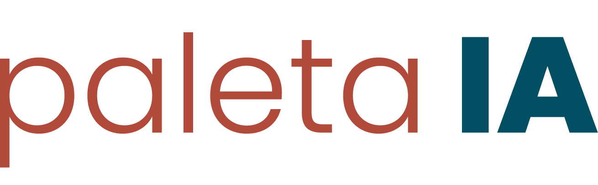
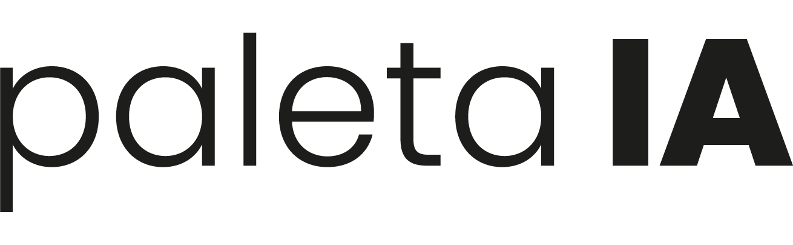

Toda semana, dados valiosos sobre quem fez prova, quem foi aprovado e quem solicitou certificado chegam em arquivos separados — e se perdem antes de virar decisão. Existe uma forma melhor de olhar para isso.

Estamos em um novo momento: ferramentas de inteligência artificial permitem transformar dados que já existem — planilhas, relatórios, cadastros — em sistemas organizados e inteligentes, sem o custo e o tempo de um desenvolvimento tradicional. A Paleta está incorporando essas ferramentas ao trabalho que já faz com o Supletivo do Norte, e este projeto é o primeiro passo nessa direção.
Cada planilha semanal é uma fotografia isolada. Sem juntar essas fotografias ao longo do tempo, dois grupos de alunos ficam invisíveis.
Um aluno a uma ou duas provas do certificado é, hoje, indistinguível de qualquer outro nome numa planilha. Sem visão acumulada do progresso, não existe um "empurrão final" — e o aluno só some.
O Supletivo tem um ciclo de cliente rápido: ao concluir, o aluno deixa de precisar do serviço. Sem um registro do que ele já conquistou, não há como saber quem são esses ex-alunos nem como reabrir contato no momento certo.
A ideia não muda o seu trabalho — muda o que acontece depois dele. As mesmas três planilhas semanais passam a alimentar um perfil contínuo de cada aluno, identificado pelo CPF.
Quem fez prova, quem foi aprovado, quem solicitou certificado — três planilhas semanais simples, no formato que o Supletivo já tem disponível, sem necessidade de nenhum sistema novo do lado de vocês.
Identificado pelo CPF, mesmo quando aparece com telefones diferentes ao longo do tempo. O perfil acumula: disciplinas já aprovadas, disciplinas pendentes, contatos mais recentes, certificados já emitidos.
nada se perde de uma semana para outraA cada importação semanal, a visão geral fica mais completa — não só de cada aluno individualmente, mas da instituição como um todo.
Hoje essa pergunta não tem resposta rápida. Com a base viva, ela aparece automaticamente — e pode ser vista mês a mês, não só no total acumulado.
Além da visão geral, qualquer aluno pode ser consultado individualmente — progresso por disciplina, contatos mais recentes e certificados já emitidos, tudo num só lugar.
Esse exemplo ilustra exatamente o tipo de aluna que hoje fica perdida entre planilhas. O Fundamental aparece como concluído — com cada matéria etiquetada conforme sua origem, aprovada aqui ou aproveitada de outra instituição — o que já libera o acesso ao Médio. E no Médio, falta só uma prova, há 12 dias. Com a base viva, ela aparece automaticamente em qualquer lista de "quem está quase lá" — e o telefone certo para contato já está ali, com a data de quando foi visto por último.
Quer ver isso com os alunos reais do Supletivo? É só me passar três planilhas de uma semana qualquer.
Ver o que precisoO essencial já está descrito acima. Conforme a base acumula semanas e meses de dados, outras leituras se tornam possíveis — sem pressa, sem promessa de prazo.
Quais matérias têm maior taxa de reprovação — útil para orientar conteúdo educativo no Instagram.
Quanto tempo, em média, um aluno leva entre uma prova e outra — sinal de quando alguém está "esfriando".
Exportações já cruzando critérios — ex: "faltam 1-2 provas e sem contato há 30 dias" — direto para o WhatsApp.
Para validar essa ideia com a sua base — não com números fictícios — preciso de uma amostra real. A partir dela, monto a primeira versão funcional e mostro o que ela revela sobre os alunos do Supletivo hoje.
Esse projeto nasce do trabalho que já fazemos juntos — agora com mais uma ferramenta para entender e acompanhar cada aluno do Supletivo do Norte. O próximo passo é simples: me envie as três planilhas e eu te mostro o que a base já revela.
Começar com as planilhas